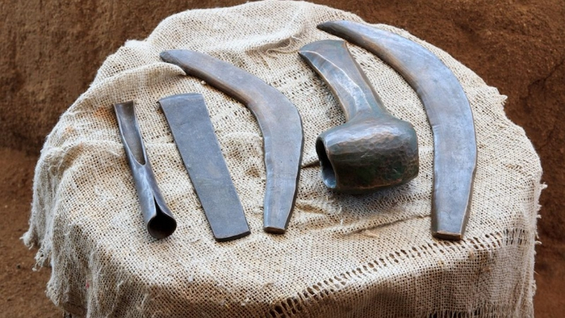

Cambios e inventos
Cambios
- Sedentarismo: Con la agricultura y la ganadería, las sociedades de la Edad de los Metales se volvieron más sedentarias. Las personas comenzaron a establecer asentamientos permanentes y a desarrollar ciudades.
- Especialización del trabajo: Con la división del trabajo, las personas comenzaron a especializarse en diferentes habilidades, lo que llevó a la creación de nuevos oficios y profesiones.
- Mayor producción de alimentos: La agricultura y la ganadería permitieron una mayor producción de alimentos, lo que a su vez llevó a un aumento en la población y al crecimiento de las sociedades.
- Desarrollo de la metalurgia: La metalurgia permitió la producción de herramientas y armas más resistentes y duraderas, lo que a su vez permitió el desarrollo de nuevas tecnologías y avances en la industria.
- Aparición del comercio: Con la producción excedente de alimentos y la especialización del trabajo, las sociedades de la Edad de los Metales comenzaron a comerciar entre sí, lo que llevó al desarrollo de rutas comerciales y al intercambio de bienes y servicios.
Inventos
- El horno de piedra que se usaba para fundir metales, elaborar vasijas o calentar alimentos.
- La cerámica, incluso con la fabricación de moldes para fundiciones de metales.
- Los tejidos con hilos simples.
- La fabricación de armas y armaduras para los enfrentamientos belicos.
- El molino de granos para moler cereales.